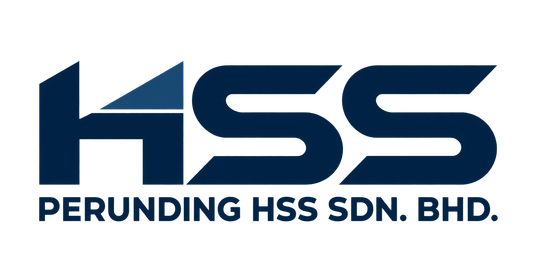

Perkhidmatan kejuruteraan
Aktiviti berdaftar dalam bidang perkhidmatan kejuruteraan.
MSIC 71102
PERKHIDMATAN KEJURUTERAAN DAN PEMBINAANPERUNDING HSS SDN. BHD. / IPOH, PERAK
Perunding HSS Sdn. Bhd.
Bandar Meru Raya, Ipoh, Perak.
LATAR BELAKANG SYARIKAT
Berpangkalan di Ipoh, Perak, Perunding HSS Sdn. Bhd. diperbadankan pada 21 Januari 2025.
Kami menjalankan aktiviti perkhidmatan kejuruteraan serta pembinaan projek kejuruteraan. Profil kami menghimpunkan maklumat korporat, kepimpinan dan kelayakan profesional yang menjadi asas syarikat.
Lihat Profil Korporat ↗BIDANG KAMI
Aktiviti berdaftar dalam bidang perkhidmatan kejuruteraan.
MSIC 71102Pembinaan projek kejuruteraan lain yang tidak dikelaskan di tempat lain.
MSIC 42909Kejuruteraan awam dan struktur, pengurusan projek serta penyeliaan pembinaan.
KEPAKARAN PENGARAHKEPIMPINAN DAN PENGALAMAN
Ir. Abd. Halim Bin Hashim
Pengarah dan pemegang saham dengan kerjaya bermula pada 1992. Pengalaman beliau meliputi jalan, jambatan, landasan kereta api, bangunan dan infrastruktur.
Lihat Pengalaman Projek ↗HUBUNGI KAMI
01 / PROFIL KORPORAT
Sebuah syarikat kejuruteraan dan pembinaan yang berpangkalan di Ipoh, Perak.
PENGENALAN
Perunding HSS Sdn. Bhd. merupakan sebuah syarikat sendirian berhad yang diperbadankan di Malaysia di bawah Akta Syarikat 2016.
STRUKTUR ORGANISASI
PEPC (Awam), BEM C113353 · IEM 29691 · JBPM A1-Ir/2025/0011 · MBOT GT25030215
MSc Geotechnical Engineering, UiTM (2022)
B.Eng. (Hons) Civil, ITM (1998)
Jurutera Profesional (Awam), BEM P119127 · Teknologis Profesional, MBOT PT24090190
Master of Project Management, UTM (2014)
Sarjana Muda Kejuruteraan (Awam), UTM (2000), Kepujian Kelas
Kedua (Tinggi)
SETIAUSAHA SYARIKAT
Halim Ghazali
· Licensed Secretary (LS0008654)
Dilantik pada 21 Januari 2025
HUBUNGI KAMI
02 / KEPAKARAN
Aktiviti syarikat disokong oleh latar belakang kejuruteraan awam, struktur dan pengurusan projek pengarah.
Aktiviti berdaftar dalam bidang perkhidmatan kejuruteraan.
MSIC 71102Pembinaan projek kejuruteraan lain yang tidak dikelaskan di tempat lain.
MSIC 42909Kejuruteraan awam dan struktur, pengurusan projek serta penyeliaan pembinaan.
KEPAKARAN PENGARAHLINGKUP PENGALAMAN PENGARAH
HUBUNGI KAMI
03 / PENGALAMAN PROJEK
Lima projek pilihan daripada rekod kerjaya Ir. Abd. Halim Bin Hashim, seperti disenaraikan dalam profil syarikat.
Jurutera Residen / Perunding Irzi Sdn. Bhd.
Jurutera Residen / GPC Integrated Sdn. Bhd.
Jurutera Residen / GPC Integrated Sdn. Bhd.
Jurutera Residen / ZAQ Engineering Services Sdn. Bhd.
Jurutera Kanan / Tech Art Sdn. Bhd.
Rujukan asal: Pengalaman profesional pengarah, halaman 12.
HUBUNGI KAMI
04 / SIJIL DAN DOKUMEN
Dokumen korporat, sijil profesional dan kelayakan akademik yang terkandung dalam profil syarikat bertarikh Oktober 2026.
Salinan ini disediakan untuk rujukan sahaja. Pengeluaran semula, penyimpanan dan pengedaran tanpa kebenaran bertulis pihak syarikat adalah dilarang. Hak cipta dokumen asal kekal pada penerbit masing-masing. Tarikh dan status sijil adalah berdasarkan profil syarikat; pengesahan semasa hendaklah diperoleh daripada badan penerbit.
05 / HUBUNGI KAMI
Hubungi pejabat kami untuk pertanyaan mengenai perkhidmatan kejuruteraan dan pembinaan.
PEJABAT PERNIAGAAN
No. 61, Tingkat 1, Jalan Meru Bestari A8, Bandar Meru Raya, 30020 Ipoh, Perak, Malaysia
Dapatkan Panduan Arah ↗Lokasi carian berdasarkan alamat perniagaan dalam profil syarikat.
PROFIL SYARIKAT
Untuk mendapatkan maklumat lanjut, sila hubungi pihak syarikat.